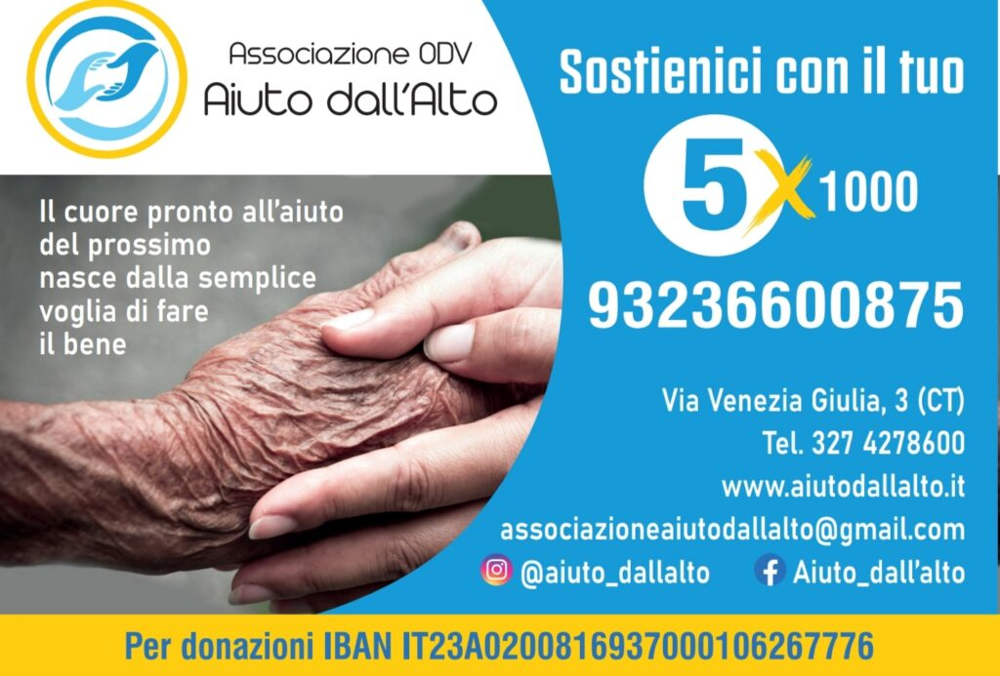

Nel febbraio 2022 tutto il mondo è stato sconvolto dall’inizio della guerra in Ucraina. Ci siamo sentiti in obbligo di dover aiutare pure noi le popolazioni colpite.
E’ per questo che abbiamo cercato un locale che potesse fare da base per la raccolta di beni di prima necessità. Abbiamo raccolto medicinali, coperte, cibo e vestiario per chi ha perso tutto sotto i bombardamenti.
Questo post vuole essere un resoconto blog della nostra attività di raccolta beni per L’ucraina. Grazie al sostegno di tanti cittadini catanesi, siamo riusciti a inviare carichi di aiuti concreti direttamente alle popolazioni civili.